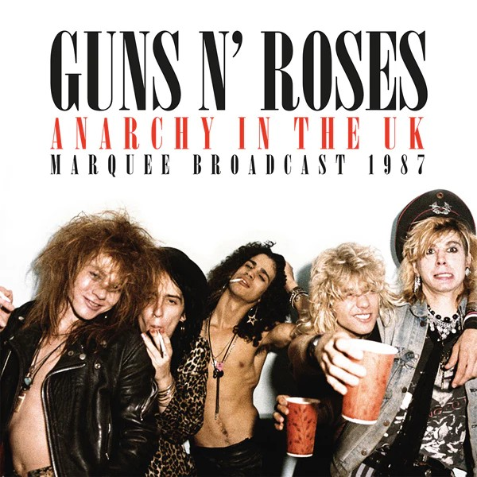
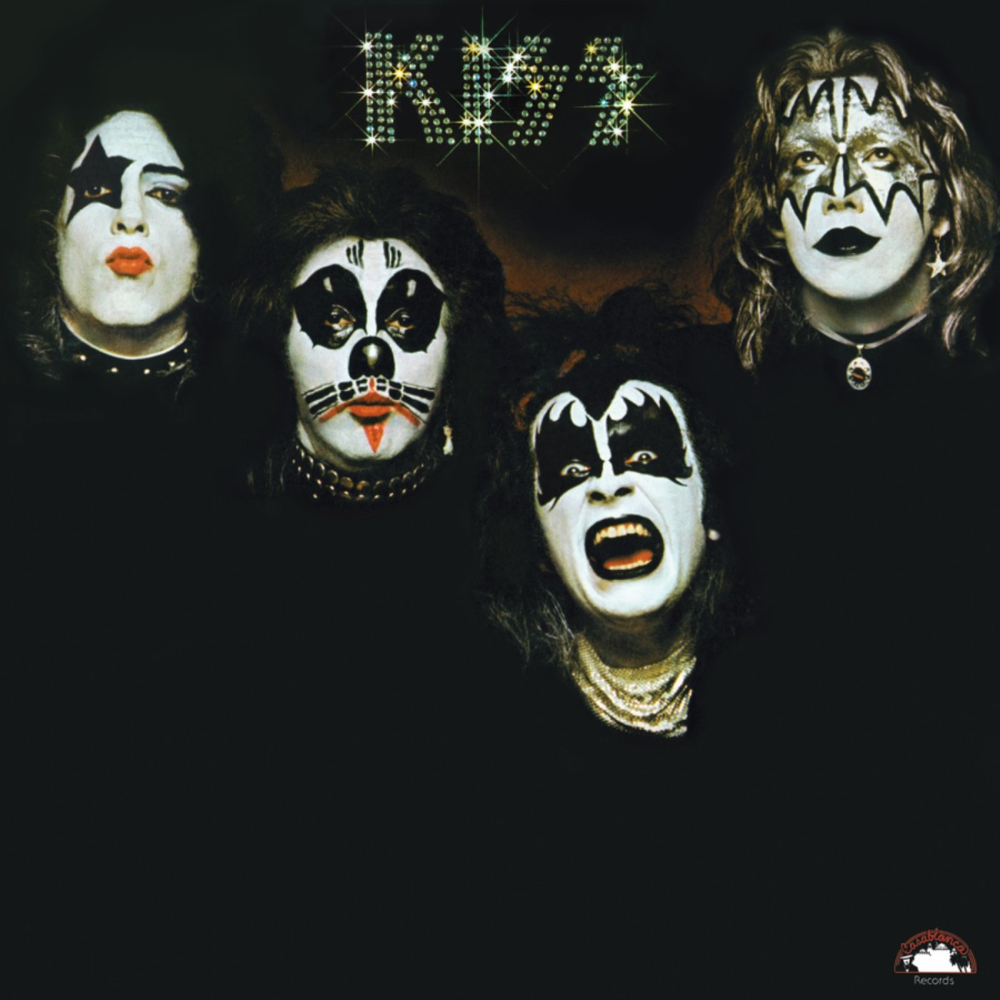
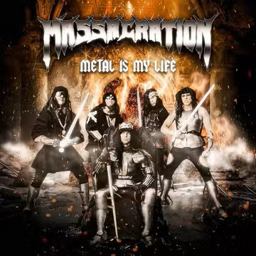
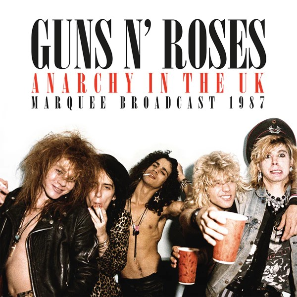
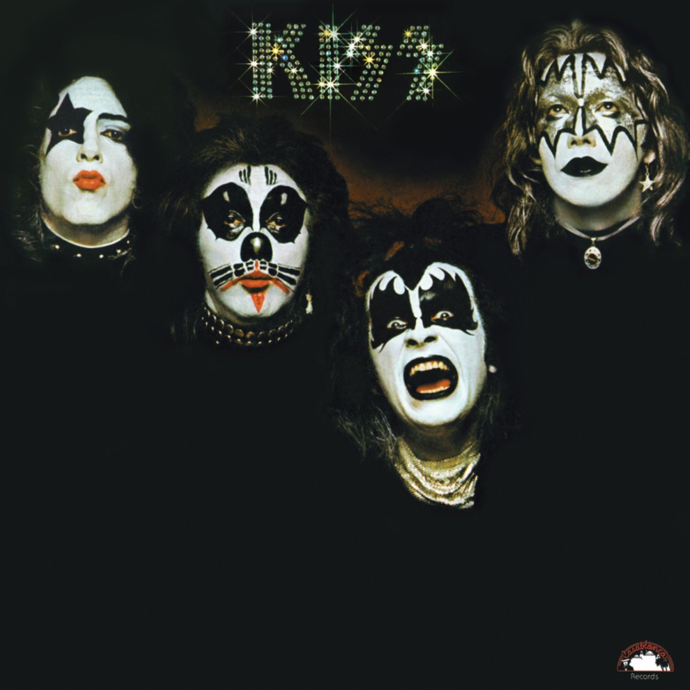
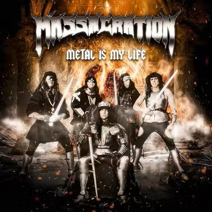
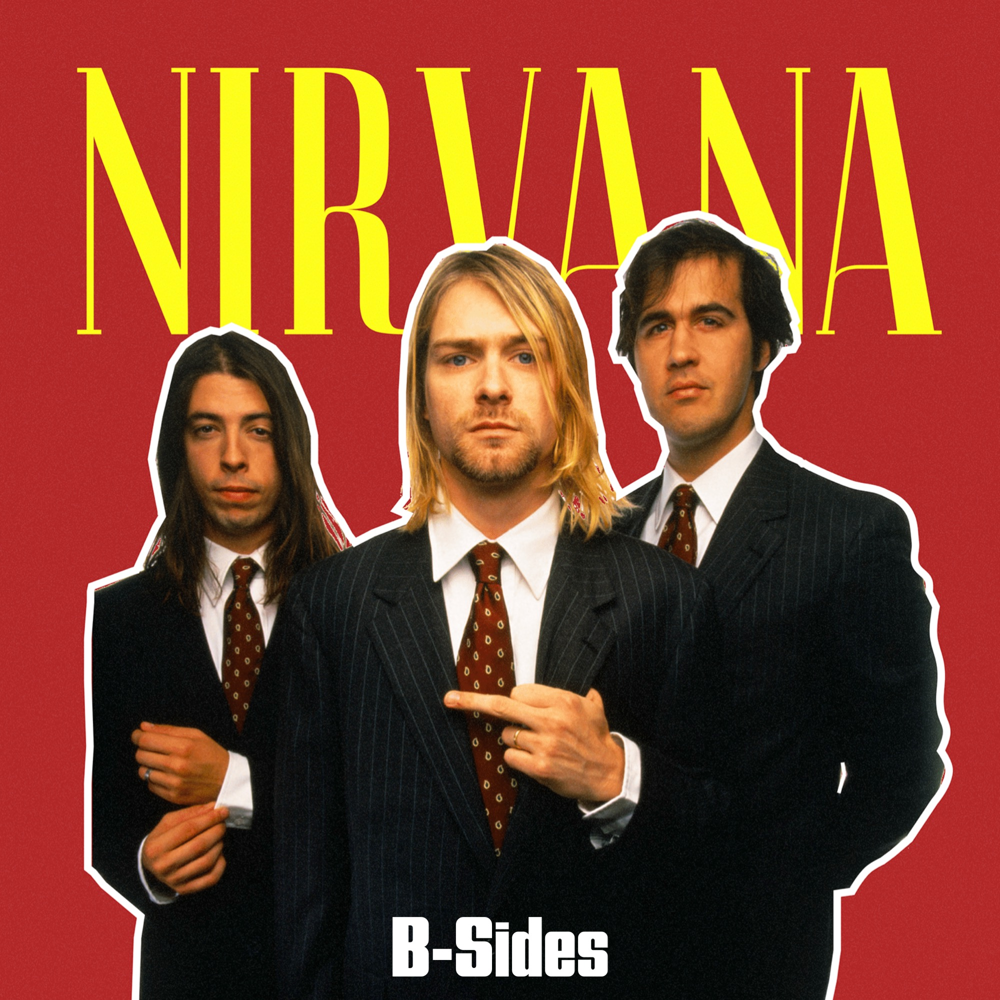
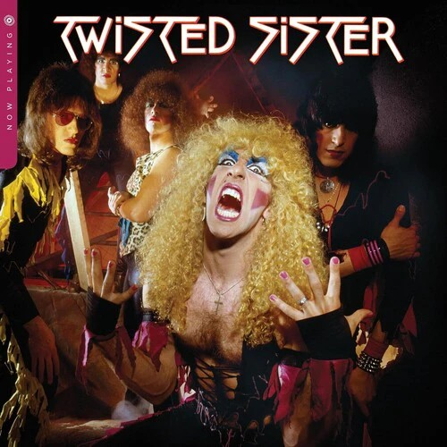
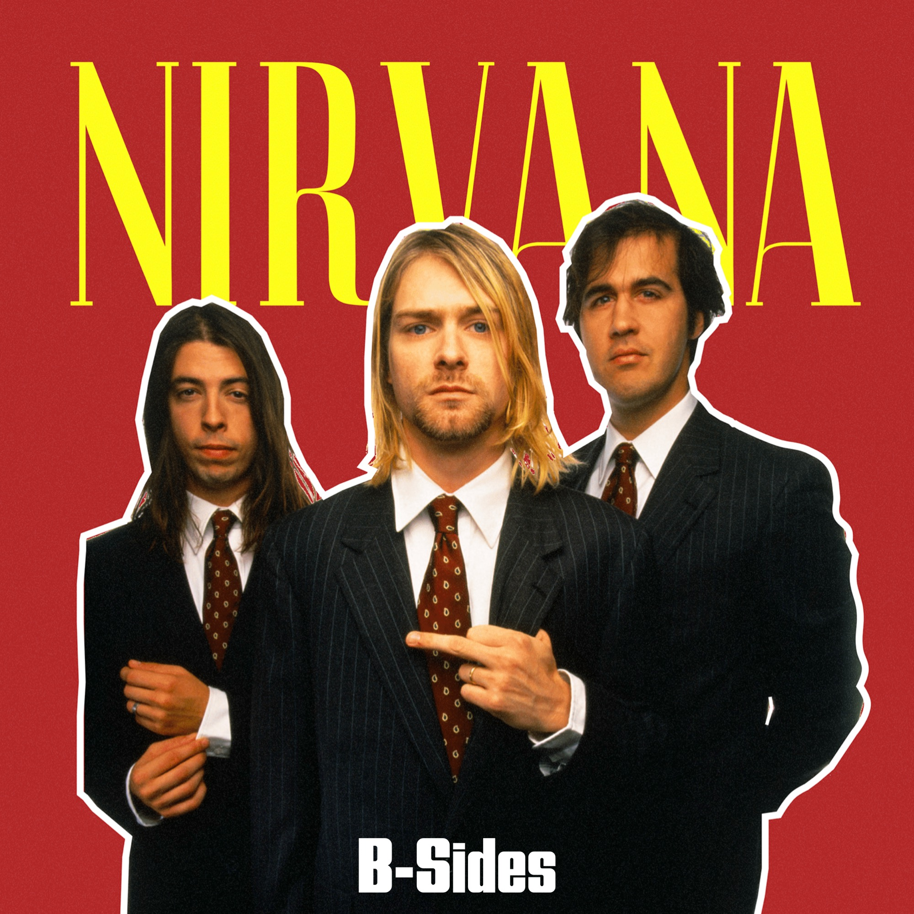
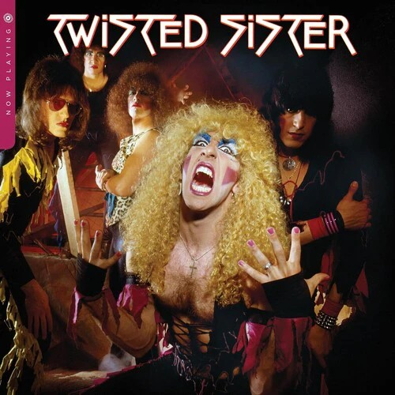

Sobre o Rock
O rock surgiu na década de 1950 a partir da fusão entre blues, country e ritmos afro-americanos, e ao longo do tempo consolidou-se como um gênero marcado pela energia, guitarras distorcidas e forte presença rítmica. Mais do que uma estética musical, o rock representa uma atitude: contestação, liberdade artística e valorização da expressão individual.
No cenário internacional moderno, bandas como Imagine Dragons e 5 Seconds of Summer exemplificam a fase contemporânea do rock, que mistura elementos eletrônicos, pop e indie sem perder a intensidade emocional.
Já no contexto brasileiro, a influência do rock pode ser percebida tanto no rock alternativo quanto na cena pop-rock e indie nacional, que exploram temas introspectivos, sociais e existenciais.
Artistas do Rock
- Imagine Dragons
- 5 Seconds of Summer
- Linkin Park
- Guns N' Roses
- Kiss
Entre outros...


 





 


